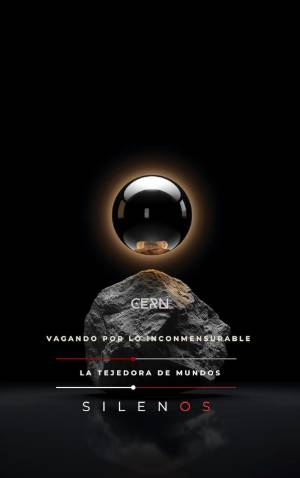

Illuminati
CERN : VAGANDO POR LO INCONMENSURABLE
Sinopsis
¿Qué es el mundo? De la arcilla de Mesopotamia al Gran Colisionador de Hadrones CERN: Vagando por lo inconmensurable no es solo un libro sobre física de partículas; es una crónica fascinante sobre la ambición humana de medir lo invisible. Desde los primeros escribas que registraban sacos de cebada en tablillas de arcilla hasta los ingenieros que operan la máquina más compleja jamás construida, esta obra recorre el hilo conductor que une la antigua Mesopotamia con el laboratorio de Ginebra. A través de sus páginas, descubrirás que la ciencia no es un camino recto hacia la verdad, sino un "vagar" lleno de desafíos técnicos, dilemas éticos y colaboraciones internacionales. Este libro te invita a explorar la "catedral subterránea" donde 10.000 científicos de todo el mundo trabajan para descifrar los misterios de la materia, la luz y el origen del universo. Lo que encontrarás en este libro: Una genealogía de la medida: Cómo el sistema sexagesimal de hace 3.500 años todavía rige nuestra forma de entender el tiempo y el espacio. La diplomacia de las partículas: La historia del CERN como un puente de paz en una Europa herida tras la Segunda Guerra Mundial. Ingeniería de lo invisible: Los secretos detrás del Gran Colisionador de Hadrones (LHC) y la caza del Bosón de Higgs. El impacto en tu vida diaria: Desde el nacimiento de la World Wide Web (WWW) en los pasillos del laboratorio hasta las innovaciones en criogenia y superconductividad. Ciencia y Sociedad: Un análisis profundo sobre las teorías de la conspiración, el miedo a los agujeros negros y la responsabilidad ética del científico como figura pública. Ideal para mentes curiosas, estudiantes de ciencias y amantes de la historia, este relato desmitifica el santuario de la ciencia para mostrarlo como un taller vivo donde la técnica, la política y la cultura se encuentran. Acompáñanos en este viaje por lo inconmensurable y descubre por qué preguntar es lo que transforma nuestra curiosidad en un legado eterno.